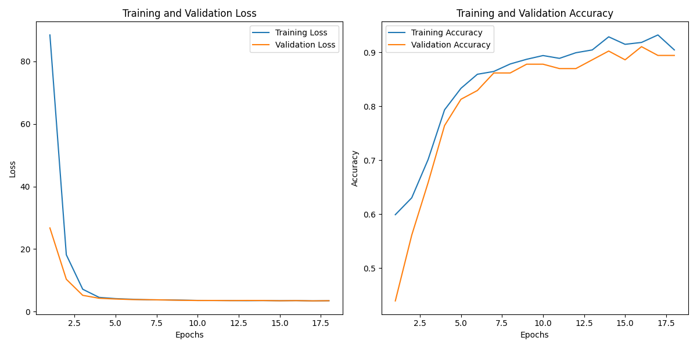
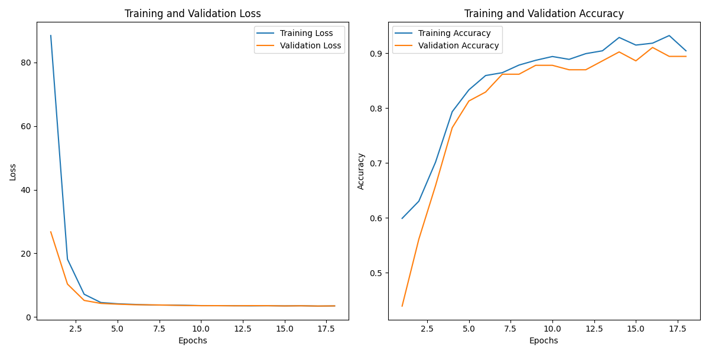

SHPE at UF iOS App
~500 Users (expected)
The SHPE iOS app is a dynamic solution aimed at enhancing accessibility and centralizing the SHPE experience for students. This user-friendly interface ensures seamless navigation, offering a comprehensive hub for all things SHPE. Stay effortlessly updated on events, announcements, and connect with peers—all at your fingertips. Elevate your SHPE journey with this dedicated iOS app, meticulously designed to foster engagement and connectivity within our vibrant community.
As Software Lead...
I played a pivotal role in orchestrating the seamless integration of our SHPE website's backend with the Xcode Swift interface. My responsibilities extended beyond mere guidance—I led the team through the intricacies of setting up the backend, imparting knowledge on vital concepts such as the Xcode package manager, https endpoints, and the nuances of crafting GraphQL requests. Through informative meetings, I facilitated a collaborative learning environment, sharing insights on organizing Swift workspaces under the Model-ViewModel-View structure. My role was not just about technical expertise but fostering a cohesive and informed team, ensuring a robust foundation for our Swift developments.
Features
Programmed in Swift
Choosing Swift for our SHPE iOS app was crucial for optimizing performance and user experience. Swift's tailored design for iOS ensures seamless integration, enhancing reliability, and responsiveness. This decision aligns with our commitment to delivering a streamlined and top-tier interface for SHPE students.
Link to Apollo GraphQL Server
Integrating our SHPE iOS app's interface with our website's server through Apollo GraphQL was a deliberate choice for optimal data communication. This connection ensures a seamless flow of information between the app and the server, enhancing performance and responsiveness. By aligning our app with Apollo GraphQL, we've established a robust link that contributes to a cohesive and dynamic user experience for SHPE students.
Core Memory for Persistent User Authentication
Leveraging Swift's core memory, our SHPE iOS app ensures persistent authentication, offering users a seamless and secure experience. By utilizing core memory functionalities, authentication details persist across app sessions, enhancing convenience without compromising on data security. This strategic use of Swift technology underscores our commitment to providing a user-friendly and reliable authentication system for SHPE students.
Gallery


 
